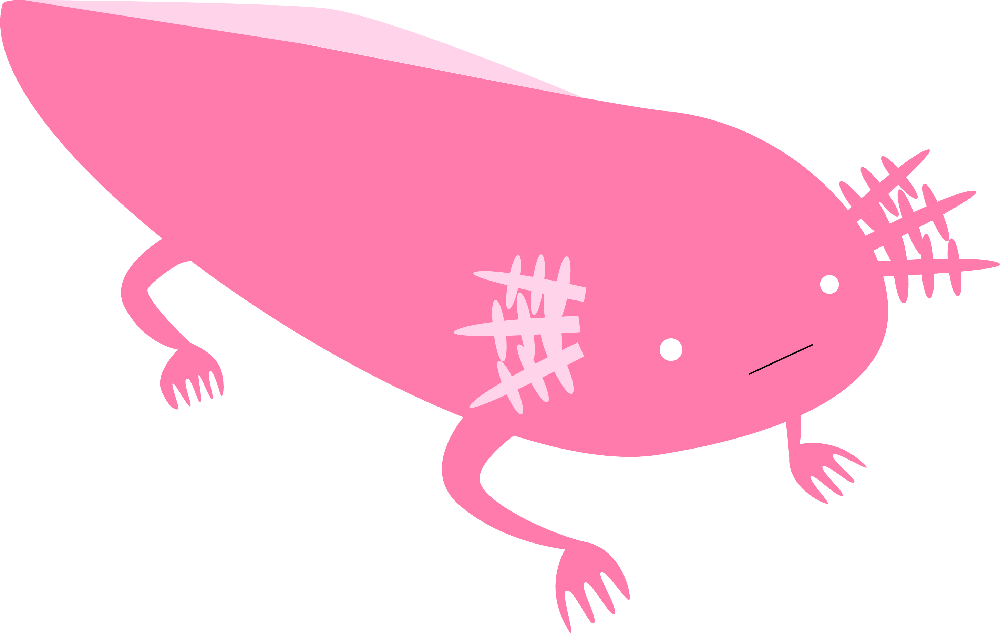

ウーパールーパーの餌診断あなたは … 人目の餌です
あなたは、今日の餌として
どのくらい優秀ですか？
顔写真を撮ると、ウーパールーパーから見た
「餌としての価値」が各項目で評価されます。
🧑
利用するのは人間
⇢
評価するのは
ウーパールーパー
ウーパールーパー
※評価基準は一切不明で、結果も毎回変化します。
カメラを起動しています…
顔が検出されないと診断できません。カメラが使えない場合は 🖼️ から画像を選べます。
ド キ ド キ タ イ ム
ウーパールーパーが気づいた…
あなたは…
今日の餌として…
解析中です。
赤虫との栄養比較
赤虫 5勝 0敗
ふがいなさ 100%
※評価基準は一切不明で、結果も毎回変化します。
このサイトについて
ウーパールーパーのためのサイトのはずなのに、利用するのは人間だけ。 あなたは「餌」として評価されることで、その不思議なねじれを体験します。
ウーパールーパー自身は診断結果を確認できず、評価に参加しているわけでもありません。 「誰かのために作られたように見える」が、実際には誰の役にも立っていないWebサイトです。
ペットのためと思って行う行為は、本当に相手のためになっているのか。 他者の視点を理解することの難しさや、人間の思い込みをユーモラスに映し出します。
撮影した画像はすべて端末内だけで処理され、どこにも送信・保存されません。